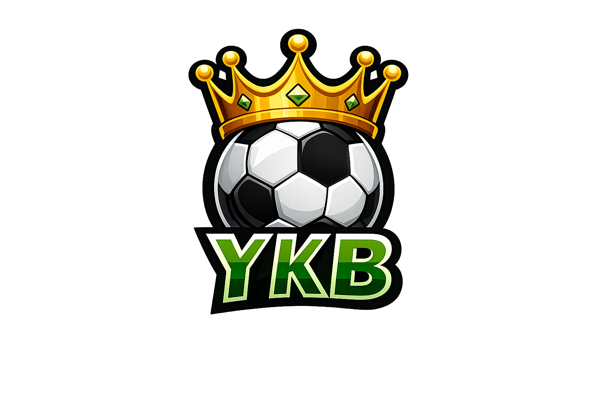

En ny version finns!
Uppdatera

YouKnowBall
⚽ YouKnowBall?
Bevisa att du är en riktig fotbollsexpert
Starta
Skriv ditt namn
Fortsätt
Välj quiz
Premier League
VM
Allsvenskan
Serie A
La Liga
Bundesliga
Ligue 1
Champions League
EM
🏆 Topp 3 i världen
Spela ett annat quiz
Ny version tillgänglig 🔄
Uppdatera